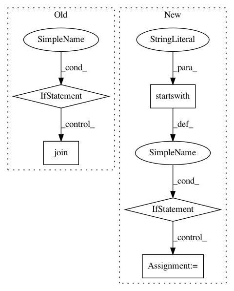

f00bbc9ca76a4a1fd9ddc46954a76237ecd4c616,iky_server/try.py,,extract_chunks,#Any#,16
Before Change
grp2 = tp
grp1.append(s)
else:
if grp1:
yield " ".join(grp1), "-".join(grp2)
grp1, grp2 = [s], [str(ind)]
yield " ".join(grp1), grp2
l = [("my", "o"), ("name", "B-DOMAIN"), ("is", "o"), ("Alfred", "B-NAME"),
After Change
elif tp.startswith("I") and (label not in labels) :
labels.append(label)
labeled[label] = s
elif (tp.startswith("I") and (label in labels)):
labeled[label] += " %s"%s
return labeled
l = [("sms", "B-TSK"), ("8714349616", "B-MOB"), ("saying", "I-MSG"), ("hello", "I-MSG"), ("how", "I-MSG"), ("are", "I-MSG"), ("you", "I-MSG")]
In pattern: SUPERPATTERN
Frequency: 3
Non-data size: 5
Instances
Project Name: alfredfrancis/ai-chatbot-framework
Commit Name: f00bbc9ca76a4a1fd9ddc46954a76237ecd4c616
Time: 2016-05-21
Author: alfred.francis@pearldatadirect.com
File Name: iky_server/try.py
Class Name:
Method Name: extract_chunks
Project Name: BYU-PRISM/GEKKO
Commit Name: dc3f1644de74a79bdede33575fab68b50767f2b3
Time: 2019-01-03
Author: john@apmonitor.com
File Name: gekko/gekko.py
Class Name: GEKKO
Method Name: solve
Project Name: mynlp/ccg2lambda
Commit Name: 66a06524eba0b22d14204baeb2ca6d4c9db7d1d0
Time: 2017-05-12
Author: pascual@nii.ac.jp
File Name: scripts/semantic_types.py
Class Name:
Method Name: convert_coq_to_nltk_type